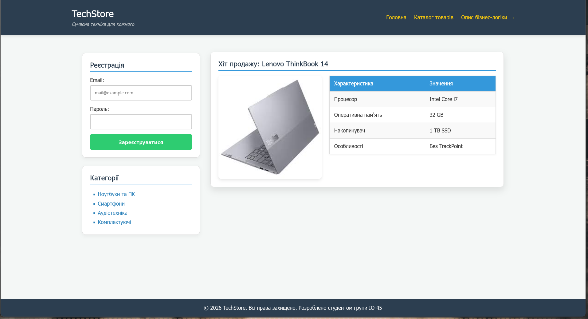
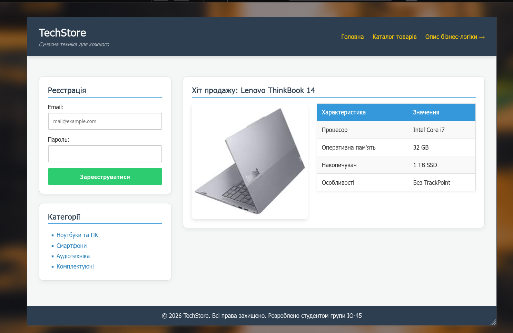
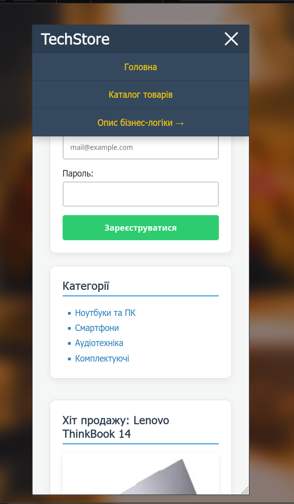

Звіт з Лабораторної роботи №3
Тема, мета. Місце розташування сайту, звіту
Тема: ВЕРСТКА HTML-ДОКУМЕНТУ. БЛОКОВА ВЕРСТКА. ВЕРСТКА ЗАСОБАМИ CSS та FLEXBOX. АДАПТИВНА ВЕРСТКА. МЕДІА-ЗАПИТИ. МЕТАТЕГ VIEWPORT
Мета: Придбати практичні навички верстки сторінок засобами CSS, верстки на основі плаваючих елементів (float) та технології Flexbox. З'ясувати переваги та недоліки макетів, застосувати медіа-запити для адаптивної верстки.
Репозиторії:
- Репозиторій власного WEB-застосунку
- Репозиторій звітного HTML-документа
- Репозиторій Резюме (самостійна робота)
Живі сторінки:
ЗАВДАННЯ №1. Зовнішній вигляд макету
У WEB-застосунку використано комбінований адаптивний макет: на десктопі це двоколонкова сітка CSS Grid із фіксованим сайдбаром (320px) та гнучкою основною колонкою (1fr). За допомогою медіа-запитів (@media) на планшеті (до 992px) і смартфоні (до 768px) макет перебудовується в одну колонку, а навігація перетворюється на «бургер-меню», яке плавно розкривається (max-height + transition) без JavaScript — на прихованому checkbox та селекторі :checked.
Семантичні компоненти: header (логотип і навігація), main (картки з реєстрацією, категоріями та товаром), footer (довідкова інформація). Для гнучкості використано відносні одиниці: rem, em, %, vw (через clamp()), vh. Ефекти: плавна поява карток (@keyframes fadeUp), зміна стану елементів при наведенні, плавне відкриття меню.



ЗАВДАННЯ №1. HTML-код та CSS-код головної сторінки
index.html
<!DOCTYPE html>
<html lang="uk">
<head>
<meta charset="UTF-8">
<meta name="viewport" content="width=device-width, initial-scale=1.0">
<title>TechStore - Інтернет-магазин</title>
<link rel="stylesheet" href="css/style.css">
</head>
<body>
<header>
<div class="header-container">
<div>
<h1>TechStore</h1>
<p>Сучасна техніка для кожного</p>
</div>
<input type="checkbox" id="menu-toggle" class="menu-toggle">
<label for="menu-toggle" class="burger-icon" aria-label="Меню">
<span></span>
<span></span>
<span></span>
</label>
<nav class="main-nav">
<a href="#" class="header-link">Головна</a>
<a href="#" class="header-link">Каталог товарів</a>
<a href="logic.html" class="header-link">Опис бізнес-логіки →</a>
</nav>
</div>
</header>
<main>
<div class="layout-grid">
<aside class="sidebar-area">
<form id="register-form" action="#" method="POST" class="card">
<h2>Реєстрація</h2>
<label for="email">Email:</label>
<input type="email" id="email" name="email" placeholder="mail@example.com" required>
<label for="password">Пароль:</label>
<input type="password" id="password" name="password" required>
<button type="submit">Зареєструватися</button>
</form>
<div class="card">
<h2>Категорії</h2>
<ul class="category-list">
<li>Ноутбуки та ПК</li>
<li>Смартфони</li>
<li>Аудіотехніка</li>
<li>Комплектуючі</li>
</ul>
</div>
</aside>
<section class="content-area">
<div class="card">
<h2>Хіт продажу: Lenovo ThinkBook 14</h2>
<div class="product-showcase">
<img src="img/noute.jpg" alt="Фото Lenovo ThinkBook 14" class="product-img">
<table class="tech-table">
<tr><th>Характеристика</th><th>Значення</th></tr>
<tr><td>Процесор</td><td>Intel Core i7</td></tr>
<tr><td>Оперативна пам'ять</td><td>32 GB</td></tr>
<tr><td>Накопичувач</td><td>1 TB SSD</td></tr>
<tr><td>Особливості</td><td>Без TrackPoint</td></tr>
</table>
</div>
</div>
</section>
</div>
</main>
<footer>
<p>© 2026 TechStore. Всі права захищено. Розроблено студентом групи ІО-45</p>
</footer>
</body>
</html>css/style.css
* { margin: 0; padding: 0; box-sizing: border-box; }
body {
font-family: 'Segoe UI', Tahoma, Geneva, Verdana, sans-serif;
background-color: #f4f7f6;
color: #333;
display: flex;
flex-direction: column;
min-height: 100vh;
}
header {
background-color: #2c3e50;
color: white;
padding: 1.5rem 2rem;
box-shadow: 0 4px 6px rgba(0,0,0,0.1);
position: relative;
}
.header-container {
max-width: 1200px;
margin: 0 auto;
display: flex;
justify-content: space-between;
align-items: center;
}
header h1 { font-size: clamp(1.4rem, 4vw, 1.8rem); }
header h1 + p { font-style: italic; color: #bdc3c7; font-size: 0.9rem; margin-top: 4px; }
.main-nav { display: flex; gap: 1.5rem; align-items: center; }
.header-link { color: #f1c40f; text-decoration: none; font-weight: bold; font-size: 1rem; transition: color 0.3s; }
.header-link:hover { text-decoration: underline; color: #fff; }
.menu-toggle { display: none; }
.burger-icon { display: none; flex-direction: column; gap: 5px; cursor: pointer; }
.burger-icon span { width: 30px; height: 3px; background-color: #fff; transition: 0.3s; border-radius: 2px; }
main {
flex: 1;
padding: 2rem;
max-width: 1200px;
margin: 0 auto;
width: 100%;
}
.layout-grid {
display: grid;
grid-template-columns: 320px 1fr;
gap: 2rem;
margin-top: 1.5rem;
}
.card {
background: #fff;
padding: 1.5rem;
border-radius: 10px;
box-shadow: 0 4px 10px rgba(0,0,0,0.05);
border: 1px solid #e0e0e0;
margin-bottom: 1.5rem;
}
#register-form { margin-bottom: 1.5rem; }
.category-list { list-style-type: square; margin-left: 1.5rem; line-height: 1.8; }
main h2 { color: #2c3e50; margin-bottom: 1rem; border-bottom: 2px solid #3498db; padding-bottom: 5px; font-size: 1.3rem; }
.category-list > li { font-weight: 500; color: #2980b9; cursor: pointer; transition: color 0.2s; }
.category-list > li:hover { color: #e67e22; }
.product-showcase { display: flex; gap: 1.5rem; align-items: flex-start; flex-wrap: wrap; }
.product-img { border-radius: 8px; box-shadow: 0 4px 8px rgba(0,0,0,0.1); width: 100%; max-width: 280px; height: auto; }
.tech-table {
flex: 1;
min-width: 280px;
border-collapse: collapse;
background: #fff;
box-shadow: 0 2px 5px rgba(0,0,0,0.05);
}
.tech-table th, .tech-table td { border: 1px solid #ddd; padding: 0.75em; text-align: left; }
.tech-table th { background-color: #3498db; color: white; }
.tech-table tr:nth-child(even) { background-color: #f9f9f9; }
.tech-table tr:hover { background-color: #e8f4f8; transition: background 0.2s; }
input[type="email"], input[type="password"] {
width: 100%; padding: 0.8rem; margin-top: 5px; margin-bottom: 1rem;
border: 2px solid #ccc; border-radius: 4px; outline: none; transition: border 0.3s;
}
input[type="email"]:focus, input[type="password"]:focus { border-color: #3498db; }
button[type="submit"] {
background-color: #2ecc71; color: white; padding: 0.8rem;
border: none; border-radius: 4px; cursor: pointer; font-size: 1rem; font-weight: bold;
transition: background 0.3s, transform 0.1s; width: 100%;
}
button[type="submit"]:hover { background-color: #27ae60; }
button[type="submit"]:active { transform: scale(0.98); }
footer {
background-color: #2c3e50; color: white; text-align: center;
padding: 1rem; margin-top: auto;
}
/* ===== Планшет: 769px - 992px ===== */
@media screen and (min-width: 769px) and (max-width: 992px) {
.layout-grid { grid-template-columns: 1fr; }
.sidebar-area { display: flex; gap: 1.5rem; flex-wrap: wrap; }
.sidebar-area > * { flex: 1; min-width: 250px; }
}
@media screen and (max-width: 768px) {
.layout-grid { grid-template-columns: 1fr; gap: 1rem; }
.product-showcase { flex-direction: column; align-items: center; }
.product-img { max-width: 100%; }
.tech-table { width: 100%; min-width: 0; }
header { padding: 1rem; }
.burger-icon { display: flex; }
.main-nav {
position: absolute;
top: 100%;
left: 0;
width: 100%;
background-color: #34495e;
flex-direction: column;
gap: 0;
max-height: 0;
overflow: hidden;
transition: max-height 0.4s ease-out;
z-index: 100;
}
.main-nav .header-link {
padding: 1rem;
display: block;
text-align: center;
border-top: 1px solid #2c3e50;
width: 100%;
}
.menu-toggle:checked ~ .main-nav { max-height: 300px; }
.menu-toggle:checked ~ .burger-icon span:nth-child(1) { transform: translateY(8px) rotate(45deg); }
.menu-toggle:checked ~ .burger-icon span:nth-child(2) { opacity: 0; }
.menu-toggle:checked ~ .burger-icon span:nth-child(3) { transform: translateY(-8px) rotate(-45deg); }
}
@keyframes fadeUp {
from { opacity: 0; transform: translateY(20px); }
to { opacity: 1; transform: none; }
}
.card { animation: fadeUp 0.6s ease-out backwards; transition: transform 0.2s, box-shadow 0.2s; }
.card:hover { transform: translateY(-3px); box-shadow: 0 8px 18px rgba(0,0,0,0.1); }
@media screen and (max-height: 500px) and (orientation: landscape),
screen and (max-width: 480px) {
header { padding: 0.5rem 1rem; }
header h1 + p { display: none; }
}
@media not print {
.menu-toggle:checked ~ .main-nav { box-shadow: 0 6px 12px rgba(0,0,0,0.2); }
}
@media (prefers-reduced-motion: reduce) {
* { animation: none !important; transition: none !important; }
}ЗАВДАННЯ №2. Фіксована таблична верстка (варіант 3)
Макет побудовано таблицею з фіксованою шириною 800px. Блок 2 займає лівий стовпчик на дві рядки (rowspan="2"), червона смуга перекриває блоки 3 і 4 (colspan="2"), шапка та підвал розтягнуті на три стовпці (colspan="3"). Ширини стовпців задано через <colgroup>.
| 1 | ||
| 2 | ||
|
3
|
4 | |
| 5 | ||
HTML:
<table class="t3 t3-fixed">
<colgroup>
<col class="col-l"><col class="col-m"><col class="col-r">
</colgroup>
<tr>
<td colspan="3" class="c-yellow h60">1</td>
</tr>
<tr>
<td rowspan="2" class="c-blue">2</td>
<td colspan="2" class="c-red h50"></td>
</tr>
<tr>
<td class="c-white">
<div class="c3-in">
<span>3</span>
<div class="c-red c3-red"></div>
</div>
</td>
<td class="c-blue">4</td>
</tr>
<tr>
<td colspan="3" class="c-yellow h60">5</td>
</tr>
</table>CSS:
.t3-fixed { width: 800px; }
.t3 { table-layout: fixed; border-collapse: collapse; text-align: center;
font-weight: bold; font-size: 24px; }
.t3 td { border: 2px solid #333; }
.col-l { width: 25%; } .col-m { width: 50%; } .col-r { width: 25%; }
.h60 { height: 60px; } .h50 { height: 50px; }
.c-yellow { background: #f1c40f; }
.c-blue { background: #2980b9; color: #fff; }
.c-red { background: #e74c3c; color: #fff; }
.c-white { background: #fff; }
.c3-in { display: flex; flex-direction: column; height: 250px; }
.c3-in span { flex: 1; display: flex; align-items: center; justify-content: center; }
.c3-red { height: 40px; margin: 0 10px 10px; }Гумова таблична верстка (варіант 3)
Та сама розмітка, але таблиця має ширину 100%, тому розтягується разом із вікном браузера, а стовпці зберігають пропорції 25% / 50% / 25%.
| 1 | ||
| 2 | ||
|
3
|
4 | |
| 5 | ||
Відмінність у CSS:
.t3-fixed { width: 800px; } /* фіксована */
.t3-fluid { width: 100%; } /* гумова */Фіксована блокова верстка (float, варіант 4)
Макет варіанту №4 (№3+1) виконано плаваючими блоками: float: left для блоків 2 і 3, float: right для блоку 4, clear: both для підвалу. Ширина контейнера фіксована — 800px. Контейнер .fl-middle має overflow: hidden, щоб охоплювати плаваючі блоки.
HTML:
<div class="fl-wrap fl-fixed">
<div class="fl-header">1</div>
<div class="fl-middle">
<div class="fl-left">2</div>
<div class="fl-center">
<div class="fl-center-top">3</div>
<div class="fl-center-bottom"></div>
</div>
<div class="fl-right">4</div>
</div>
<div class="fl-footer">5</div>
</div>CSS:
.fl-fixed { width: 800px; }
.fl-wrap { border: 2px solid #333; overflow: hidden; background: #fff;
font-weight: bold; font-size: 24px; text-align: center; }
.fl-header, .fl-footer { background: #f1c40f; padding: 20px 0; }
.fl-middle { overflow: hidden; }
.fl-left { float: left; width: 30%; height: 300px; background: #2980b9; color: #fff; padding-top: 130px; }
.fl-center { float: left; width: 40%; height: 300px; padding: 10px; }
.fl-right { float: right; width: 30%; height: 300px; background: #2980b9; color: #fff; padding-top: 130px; }
.fl-center-top { height: 75%; padding-top: 90px; border: 2px solid #ccc; }
.fl-center-bottom { height: 20%; margin-top: 5%; background: #e74c3c; }
.fl-footer { clear: both; }Гумова блокова верстка (float, варіант 4)
Та сама структура, але контейнер має ширину 100%, а ширини колонок задано у відсотках (30% / 40% / 30%), тому макет розтягується разом із вікном.
.fl-fixed { width: 800px; } /* фіксована */
.fl-fluid { width: 100%; } /* гумова */ЗАВДАННЯ №3 FLEXBOX. Зовнішній вигляд сторінки (варіант 3)
Сторінку «Популярні напрямки курсів програмування» виконано технологією Flexbox: ряд карток курсів, галерея фото, блок «Від новачка до PRO-розробника» та оранжевий банер. Жива сторінка: lab3/index.html.

HTML-код та CSS-код сторінки FLEXBOX
index.html
<!DOCTYPE html>
<html lang="uk">
<head>
<meta charset="UTF-8">
<meta name="viewport" content="width=device-width, initial-scale=1.0">
<title>Курси програмування — Flexbox</title>
<link rel="preconnect" href="https://fonts.googleapis.com">
<link rel="stylesheet" href="https://fonts.googleapis.com/css2?family=Montserrat:wght@500;600;700;800&display=swap">
<link rel="stylesheet" href="css/style.css">
</head>
<body>
<!-- 1. Напрями курсів -->
<section class="courses">
<h2 class="section-title">Популярні напрямки<span>курсів програмування</span></h2>
<div class="cards">
<article class="card">
<div class="card-body">
<img src="img/js.png" alt="JavaScript" class="card-icon">
<p class="badge">Complex</p>
<h3>JavaScript</h3>
<p class="subtitle">Комплексний курс</p>
<ul class="info">
<li>Стартовий рівень: початківець</li>
<li>Тривалість: 5-11 місяців</li>
<li>Ціна: від 14500 грн.</li>
</ul>
<p class="seats">Залишилось 3 місця</p>
</div>
<a href="#" class="card-link">Детальніше</a>
</article>
<article class="card card-accent">
<div class="card-body">
<img src="img/java.png" alt="Java" class="card-icon">
<p class="badge">Complex</p>
<h3>Java</h3>
<p class="subtitle">Комплексний курс</p>
<ul class="info">
<li>Стартовий рівень: початківець</li>
<li>Тривалість: 6-11 місяців</li>
<li>Ціна: від 14500 грн</li>
</ul>
<p class="seats">Залишилось 6 місць</p>
</div>
<a href="#" class="card-link">Детальніше</a>
</article>
<article class="card">
<div class="card-body">
<img src="img/python.png" alt="Python" class="card-icon">
<p class="badge">Complex</p>
<h3>Python</h3>
<p class="subtitle">Комплексний курс</p>
<ul class="info">
<li>Стартовий рівень: початківець</li>
<li>Тривалість: 6-11 місяців</li>
<li>Ціна: від 14500 грн</li>
</ul>
<p class="seats">Залишилось 4 місця</p>
</div>
<a href="#" class="card-link">Детальніше</a>
</article>
</div>
</section>
<!-- 2. Фотогалерея -->
<section class="gallery">
<img src="img/photo1.jpg" alt="Студенти працюють разом за ноутбуком">
<img src="img/photo2.jpg" alt="Студент пише код">
<img src="img/photo3.jpg" alt="Студентка за ноутбуком">
<img src="img/photo4.jpg" alt="Студент на занятті">
</section>
<!-- 3. Від новачка до PRO -->
<section class="pro">
<div class="pro-photo">
<img src="img/girl.jpg" alt="Усміхнена дівчина з папкою">
</div>
<div class="pro-content">
<h2>Від новачка до PRO-розробника</h2>
<div class="pro-text">
<p>Робота в IT - це високі зарплати, можливість віддаленої співпраці із закордонними компаніями і свобода вибору. Але є і мінуси. Низький старт - головний з них. Фахівцю без досвіду складно отримати робочий стаж, а зарплата коливається на рівні мінімальної.</p>
<p>На курсах з інкубатором наші студенти отримують додаткових 5 місяців досвіду, який так сильно вимагають роботодавці.</p>
<p>З таким резюме ви станете бажаним кандидатом для будь-якої компанії.</p>
</div>
</div>
</section>
<!-- 4. Банер -->
<section class="banner">
<h2>Навчайся зараз, сплачуй потім</h2>
<div class="banner-note">
<img src="img/check.png" alt="">
<p>Розстрочування на 24 місяці</p>
</div>
</section>
</body>
</html>css/style.css
:root {
--dark: #2a2a2a;
--card: #212121;
--orange: #ff9a3c;
--blue: #3498f0;
--text: #fff;
--radius: 1.5rem;
}
* { margin: 0; padding: 0; box-sizing: border-box; }
html { font-size: 16px; }
body {
font-family: 'Montserrat', 'Segoe UI', Tahoma, sans-serif;
font-weight: 500;
color: #222;
line-height: 1.5;
}
img { display: block; max-width: 100%; }
.courses {
background: var(--dark);
color: var(--text);
padding: 2.5rem 2rem 2.5rem;
}
.section-title {
text-align: center;
text-transform: uppercase;
font-weight: 800;
font-size: clamp(1.1rem, 2.4vw, 1.5rem);
line-height: 1.3;
margin-bottom: 2rem;
}
.section-title span {
display: block;
color: var(--orange);
font-size: clamp(1.6rem, 3.6vw, 2.2rem);
}
.cards {
display: flex;
justify-content: space-between;
gap: 2rem;
max-width: 75rem;
margin: 0 auto;
}
.card {
flex: 1 1 0; /* рівна ширина, картки розтягуються */
display: flex;
flex-direction: column; /* всередині: тіло + кнопка внизу */
background: var(--card);
border: 1px solid #3a3a3a;
border-radius: var(--radius);
overflow: hidden;
transition: transform 0.25s, border-color 0.25s;
}
.card-accent { border-color: var(--orange); }
.card:hover { transform: translateY(-0.4rem); border-color: var(--orange); }
.card-body {
flex: 1; /* займає весь вільний простір */
display: flex;
flex-direction: column;
align-items: center;
padding: 1.5rem 1.5rem 1.2rem;
text-align: center;
}
.card-icon { height: 3.2rem; width: auto; }
.badge { color: var(--blue); font-weight: 700; margin: 0.2rem 0 1rem; }
.card h3 { text-transform: uppercase; font-weight: 800; font-size: 1.15rem; }
.subtitle { color: var(--orange); font-weight: 700; margin-bottom: 1.2rem; }
.info { list-style: none; align-self: stretch; padding: 0 0.5rem; text-align: left; }
.info li { margin-bottom: 0.1rem; }
.seats {
margin-top: auto; /* притискає «Залишилось…» до низу */
padding-top: 1.5rem;
color: var(--blue);
font-weight: 700;
font-size: 0.85rem;
}
.card-link {
border-top: 1px solid #444;
padding: 0.9rem;
text-align: center;
color: #fff;
text-decoration: none;
font-weight: 700;
font-size: 0.8rem;
transition: background 0.25s, color 0.25s;
}
.card-link:hover { background: var(--orange); color: #222; }
/* ---------- 2. Галерея ---------- */
.gallery {
background: var(--blue);
display: flex;
justify-content: center;
gap: 1.5rem;
padding: 1.7rem 2rem;
}
.gallery img {
flex: 1 1 0;
min-width: 0;
max-width: 18rem;
aspect-ratio: 284 / 195;
object-fit: cover;
border-radius: 1rem;
transition: transform 0.3s;
}
.gallery img:hover { transform: scale(1.04); }
/* ---------- 3. Від новачка до PRO ---------- */
.pro {
display: flex;
align-items: center;
max-width: 75rem;
margin: 0 auto;
padding: 2rem 2rem 0;
gap: 2rem;
}
.pro-photo { flex: 0 0 30%; align-self: flex-end; }
.pro-photo img { width: 100%; height: auto; }
.pro-content {
flex: 1;
display: flex;
flex-direction: column;
gap: 2rem;
padding-bottom: 2rem;
}
.pro-content h2 {
align-self: flex-end;
text-align: right;
text-transform: uppercase;
color: var(--orange);
font-weight: 800;
font-size: clamp(1.3rem, 2.8vw, 1.9rem);
}
.pro-text {
position: relative;
align-self: center;
width: min(100%, 31rem);
padding: 1.5rem 0 1.5rem 1.5rem;
font-size: 0.95rem;
}
.pro-text p + p { margin-top: 0.8rem; text-indent: 1.5rem; }
/* декоративні кути */
.pro-text::before, .pro-text::after {
content: '';
position: absolute;
width: 3.5rem;
height: 3.5rem;
}
.pro-text::before {
top: 0; left: 0;
border-top: 3px solid var(--blue);
border-left: 3px solid var(--blue);
border-top-left-radius: 0.6rem;
}
.pro-text::after {
bottom: 0; right: -2rem;
border-bottom: 3px solid var(--orange);
border-right: 3px solid var(--orange);
border-bottom-right-radius: 0.6rem;
}
/* ---------- 4. Банер ---------- */
.banner {
background: var(--orange);
color: #fff;
display: flex;
align-items: center;
justify-content: center;
gap: 3rem;
padding: 1.2rem 2rem;
}
.banner h2 {
text-transform: uppercase;
font-weight: 800;
font-size: clamp(1.1rem, 2.4vw, 1.5rem);
max-width: 22rem;
line-height: 1.15;
}
.banner-note { display: flex; align-items: center; gap: 0.8rem; color: #222; }
.banner-note img { height: 2.8rem; width: auto; }
.banner-note p { text-transform: uppercase; font-weight: 800; font-size: 0.85rem; }
/* ---------- Адаптив ---------- */
/* планшет */
@media screen and (max-width: 992px) {
.cards { flex-wrap: wrap; justify-content: center; }
.card { flex: 1 1 15rem; max-width: 22rem; }
.gallery { flex-wrap: wrap; }
.gallery img { flex: 1 1 40%; max-width: none; }
.pro-photo { flex-basis: 35%; }
}
/* телефон */
@media screen and (max-width: 640px) {
.courses, .gallery { padding-left: 1rem; padding-right: 1rem; }
.cards { flex-direction: column; align-items: center; }
.card { width: 100%; max-width: none; }
.pro { flex-direction: column; padding: 1.5rem 1rem 0; }
.pro-photo { flex-basis: auto; width: 70%; order: 2; }
.pro-content { order: 1; padding-bottom: 0; }
.pro-content h2 { align-self: center; text-align: center; }
.pro-text::after { right: 0; }
.banner { flex-direction: column; gap: 1rem; text-align: center; }
}
/* ландшафт на низьких екранах або дуже вузькі: компактніші відступи */
@media screen and (max-height: 500px) and (orientation: landscape), screen and (max-width: 360px) {
.courses { padding-top: 1.2rem; padding-bottom: 1.2rem; }
}
@media (prefers-reduced-motion: reduce) {
* { transition: none !important; }
}Особливості макету: ряд карток .cards — це flex-контейнер (justify-content: space-between, gap), а кожна картка має flex: 1 1 0 і тому отримує рівну ширину. Усередині картки — другий flex-контейнер із flex-direction: column: тіло картки займає весь вільний простір (flex: 1), а кнопка «Детальніше» завжди притиснута донизу; рядок «Залишилось…» притиснуто через margin-top: auto. Галерея — flex-ряд із рівними фото, блок PRO — flex-ряд «фото + колонка тексту».
Адаптивна верстка: десктопна, планшетна та мобільна версії
Усі сторінки мають метатег <meta name="viewport" content="width=device-width, initial-scale=1.0">: без нього мобільні браузери масштабують сторінку як десктопну, і медіа-запити не спрацьовують належним чином. Обрані брейкпоінти:
- Десктопна версія (понад 992px). Основний макет: двоколонкова сітка, повна горизонтальна навігація, у звіті — бічне меню зліва та основний блок справа.
- Планшетна версія (769–992px для TechStore, до 992px для звіту та flex-сторінки). Макет в одну колонку, сайдбар перетворюється на ряд карток (
flex-wrap), картки курсів переносяться на новий рядок. - Мобільна версія (до 768px для TechStore, до 640px для звіту та flex-сторінки). Одна колонка, зменшені відступи, меню згортається в «бургер», картки курсів розташовуються стовпчиком.
Логічні оператори в медіа-запитах:
and— умови поєднуються:screen and (min-width: 769px) and (max-width: 992px);- кома — логічне «АБО»:
(max-height: 500px) and (orientation: landscape), (max-width: 360px)— стилі застосуються, якщо виконується хоча б один із запитів; not— заперечення:@media not print.
Також застосовано запит за орієнтацією пристрою (orientation: landscape) та prefers-reduced-motion для користувачів, які вимкнули анімації.
Медіа-запити звітного документа (додані до цього файлу):
/* ===== Адаптивність звіту ===== */
/* Планшет: до 992px */
@media screen and (max-width: 992px) {
.layout { flex-direction: column; }
.sidebar { width: auto; flex-direction: row; flex-wrap: wrap; }
.sidebar a { flex: 1 1 14rem; border-radius: 15px; }
.main-content { height: auto; }
}
/* Телефон: до 640px */
@media screen and (max-width: 640px) {
body { padding: 8px; }
.header h3 { font-size: 1rem; }
.photo-box { position: static; margin: 0 auto 10px; }
.nav-horizontal a { padding: 8px 6px; font-size: 12px; }
.main-content { padding: 10px; }
}
/* Логічне "або" (кома) + орієнтація */
@media screen and (max-height: 500px) and (orientation: landscape),
screen and (max-width: 360px) {
.header h3 { font-size: 0.85rem; }
.main-content { height: auto; }
}
/* Логічне "не" */
@media not print {
.sidebar a { transition: background 0.2s; }
.sidebar a:hover { background: #ffff99; }
}ВИСНОВКИ
Завдання №1. Власний застосунок TechStore вдосконалено до повноцінного адаптивного дизайну: комбінований макет (CSS Grid + Flexbox), медіа-запити для десктопа, планшета і смартфона, бургер-меню без JavaScript, відносні одиниці (rem, em, %, vw, vh) та анімації (поява карток, hover-ефекти, плавне відкриття меню). Структуру проєкту розділено: HTML, CSS і зображення зберігаються окремо.
Завдання №2. Реалізовано табличну верстку (фіксовану та гумову) та блокову верстку на плаваючих елементах (float + clear). Фіксований макет має передбачувану ширину, але не пристосований до різних екранів; гумовий розтягується разом із вікном, але на дуже широких екранах рядки стають задовгими. Табличну верстку нині вважають застарілою для макетів сторінок, а float потребує очищення потоку; обидва підходи поступаються Flexbox та Grid.
Завдання №3. За допомогою Flexbox виконано сторінку варіанту 3. Властивості flex, flex-direction, flex-wrap, justify-content, align-items та margin-top: auto дозволили без «хаків» вирівняти картки за висотою і перебудовувати їх під різні екрани.
Адаптивність. Використано медіа-запити з логічними операторами and, кома («або») та not, а також запит за орієнтацією пристрою. Для звітного документа додано власні медіа-запити, завдяки чому він зручно переглядається на десктопі, планшеті та смартфоні.